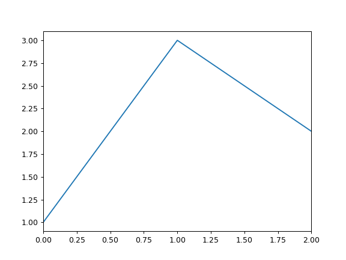

pandas.DataFrame.plot.line¶
-
DataFrame.plot.line(x=None, y=None, **kwds)[source]¶ Plot DataFrame columns as lines.
This function is useful to plot lines using DataFrame’s values as coordinates.
Parameters: - x : int or str, optional
Columns to use for the horizontal axis. Either the location or the label of the columns to be used. By default, it will use the DataFrame indices.
- y : int, str, or list of them, optional
The values to be plotted. Either the location or the label of the columns to be used. By default, it will use the remaining DataFrame numeric columns.
- **kwds
Keyword arguments to pass on to
pandas.DataFrame.plot().
Returns: - axes :
matplotlib.axes.Axesornumpy.ndarray Returns an ndarray when
subplots=True.
See also
matplotlib.pyplot.plot- Plot y versus x as lines and/or markers.
Examples
The following example shows the populations for some animals over the years.
>>> df = pd.DataFrame({ ... 'pig': [20, 18, 489, 675, 1776], ... 'horse': [4, 25, 281, 600, 1900] ... }, index=[1990, 1997, 2003, 2009, 2014]) >>> lines = df.plot.line()
An example with subplots, so an array of axes is returned.
>>> axes = df.plot.line(subplots=True) >>> type(axes) <class 'numpy.ndarray'>

The following example shows the relationship between both populations.
>>> lines = df.plot.line(x='pig', y='horse')